WellCome Kitae Resume

성장을 위해 유랑하는 에너지 넘치는
개발자 박기태입니다.
Work Experience
다한정보기술
2024.02 ~ 2024.05 (3 Month)
2024.02 ~ 2024.05 (3 Month)
나눔솔루션
2021.09 ~ 2023.11 (2Year 4Month)
2021.09 ~ 2023.11 (2Year 4Month)
코요코
2021.03 ~ 2021.08 (5 Month)
2021.03 ~ 2021.08 (5 Month)
Education
공간정보융합서비스개발실무
국토정보교육원 2023.04 - 2023.04
국토정보교육원 2023.04 - 2023.04
Java 기초부터 JSP웹개발 실무향상
오라클자바교육학원 2022.12 - 2022.12
오라클자바교육학원 2022.12 - 2022.12
iOS앱 SWIFT프로그래밍 입문
더조은컴퓨터아카데미 2022.08 - 2022.10
더조은컴퓨터아카데미 2022.08 - 2022.10
Java활용 웹&안드로이드앱 개발
노원이젠아카데미 2020.03 - 2020.09
노원이젠아카데미 2020.03 - 2020.09
체육학 학사
KBS예술과학원 2012.03 - 2016.12
KBS예술과학원 2012.03 - 2016.12
Skills
지금까지 경험과 사용했던 스킬입니다. 다수의 금융 SI프로젝트 및 클라우드 솔루션 과 공공기관 유지보수 업무를 하며 익히고 시용하였습니다.
- Language
- Java / Javascript
- Framework & Library
- JQuery / Spring / Spring Boot / AgularJs / 전자정부프레임워크
- Was & Server
- Tomcat / Nginx /Jeus
- SCM
- Git / SVN / GitLab
- OS
- Window / Linux
- DB
- MySQL / Oracle / PostgreSQL / MariaDB
- Etc
- JPA / xFrame / Websquare5 / SwaggerUI / Report(clipReport,OzReport)
예의와 배려있는 소통
건강한 체력
도전 과 노력
성취감
책임감있는
문제해결
문제해결
제가 얻은 경험은 다양한 팀원들과 원할한 소통을 가능하게 성장하였습니다. 저는 경험 과 장점을 통해 회사의 필요한 인재가 될 것입니다.
Project
제가 지금까지 참여하였던 프로젝트와 업무들 입니다.
금융프로젝트와 공공기관 유지보수 클라우드 솔루션 업무에 참여했습니다.
대·중소기업·농어업협력재단
기술보호 울타리/ 기술유출/ 성과공유제 / 협력이익공유제/ 상생협력기금 유지개선 및 사용자 인바운드
2024.02~2023.05 (4 Month)
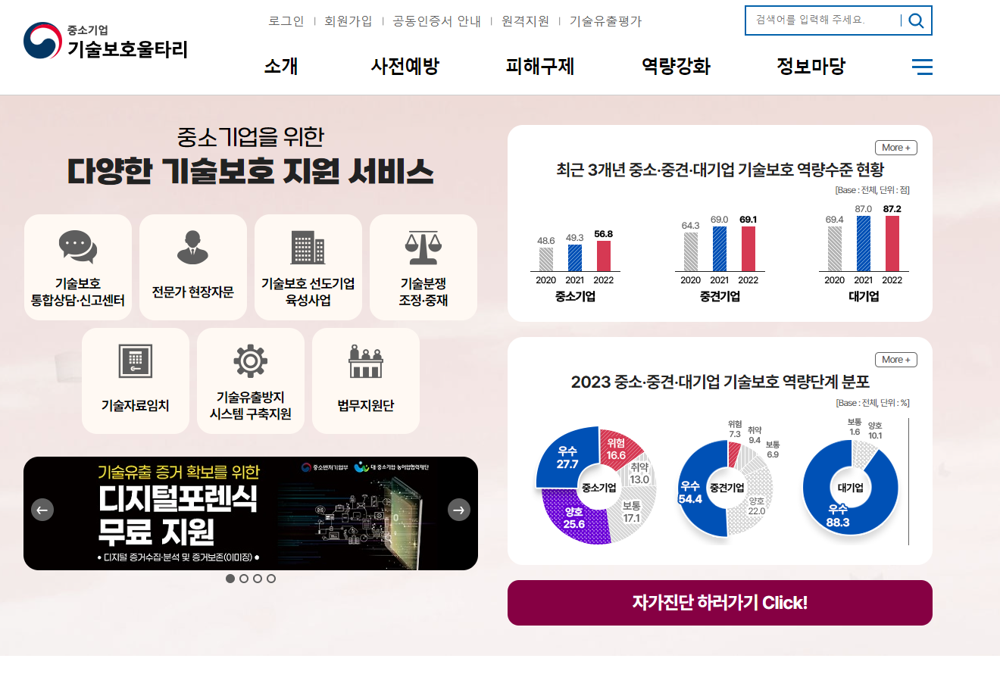 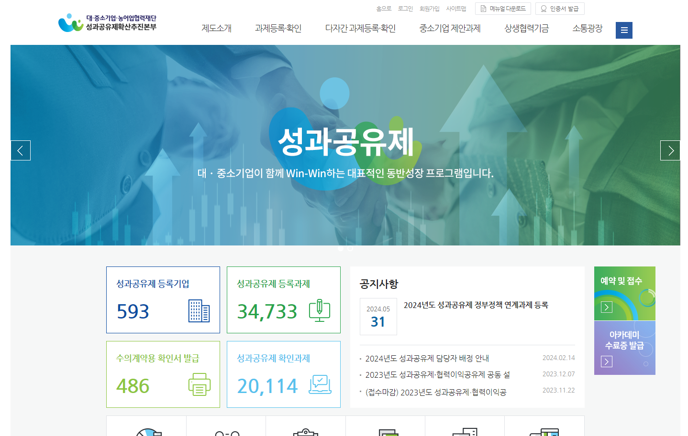 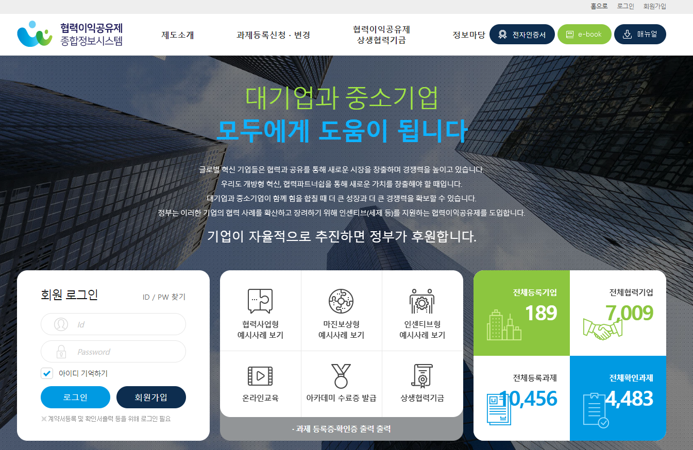 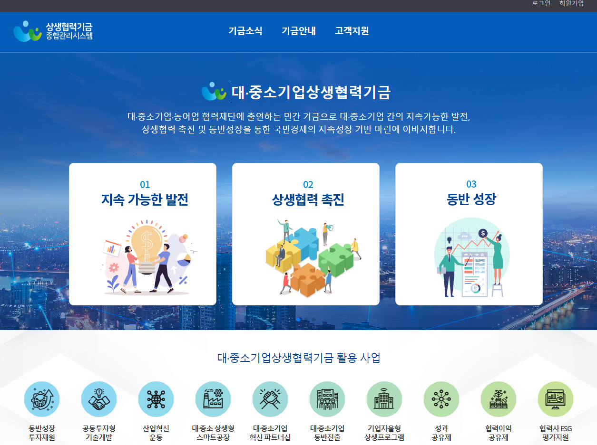
주요기술 : Java / JSP /Jstl / JavaScript/ JQuery / GitLab / Oracle / MySQl/ React / MyBatis울타리 선도기업 선정사업 기능 설계 및 재개발(기여도 100%)
울타리 신규 기능개선(전문가 등록) 작업 서포트 및 등록시 오류 개선(기여도 80% )
성과공유제 메일발송 및 파일다운로드 오류 개선 ( 기여도80% )
성과공유제 / 협력이익공유제 도메인 변경작업 ( 기여도 60% )
현업 담당자들이 사용하는 메인 화면 개선 및 유지보수
운영서버 관리 및 유지 개선
Issue
이전 업무 담당자의 갑작스러운 퇴사로 인수인계 미인수
👉 고객사 담당자에게 질의 / 소스분석 / 예전 문서들로 학습하여 업무 수행
서로 다른 업무에 대한 다수의 문의
👉 고객사 담당자들과 소통 과 빠른 업무 처리로 문제해결
2년전 개발한 사업메뉴 재개발 요청
👉 고객사와 협의로 유지보수 업무 와 재개발 변행 진행
review
담당자, 사용자들과 직접적으로 소통을 하여 오류를 처리하고 운영서버를 관리하여 로그분석과 프로세스 관리같은 개발 위주가 아닌 운영하는 서비스를 직접관리하는 지금까지 안해본 새로운 업무를 진행하여 좋은 경험을 할 수 있었습니다.
기술보호 울타리/ 기술유출/ 성과공유제 / 협력이익공유제/ 상생협력기금 유지개선 및 사용자 인바운드
2024.02~2023.05 (4 Month)
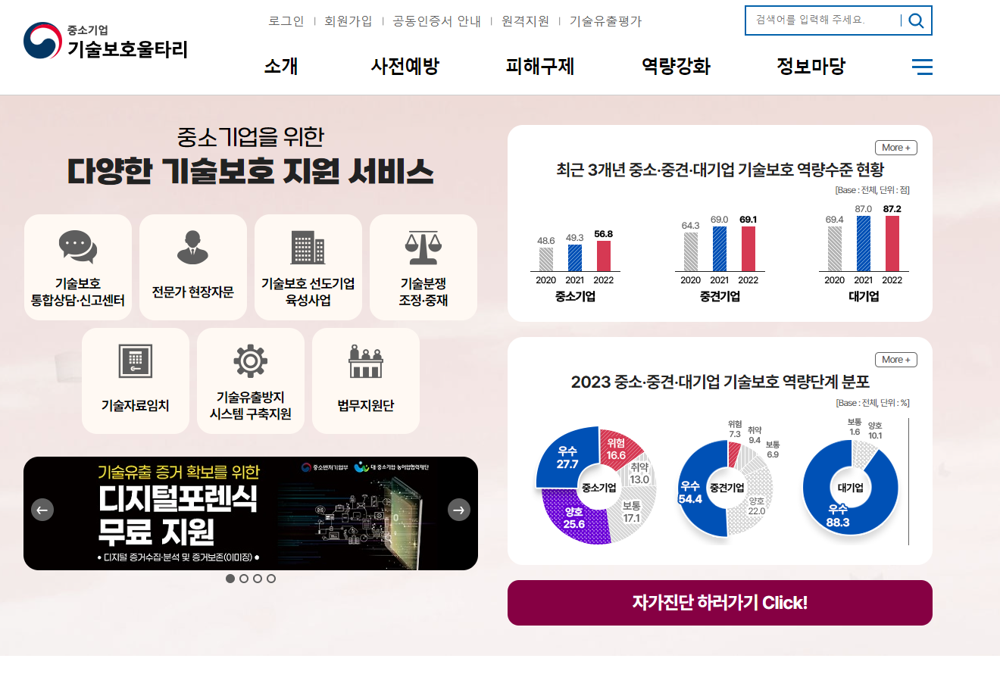 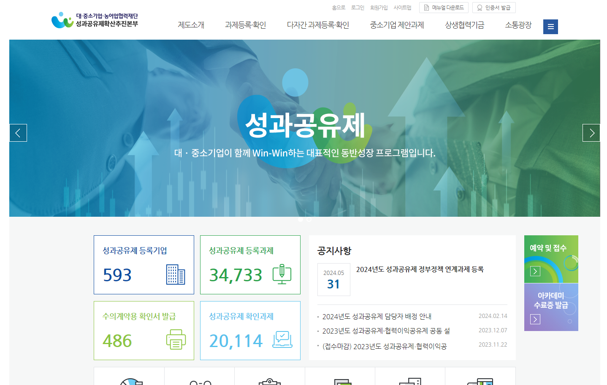 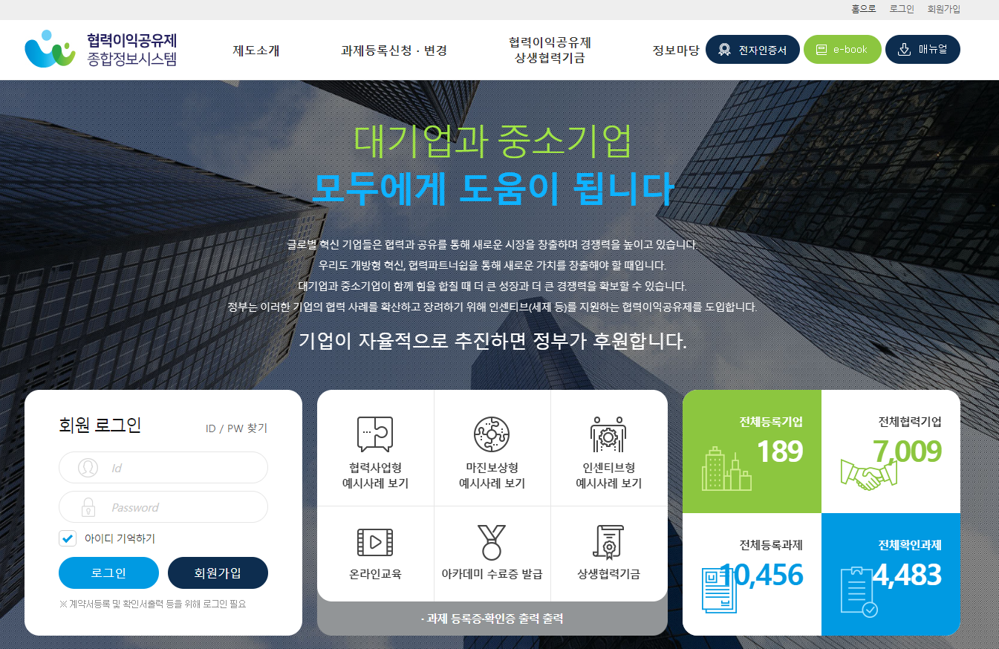 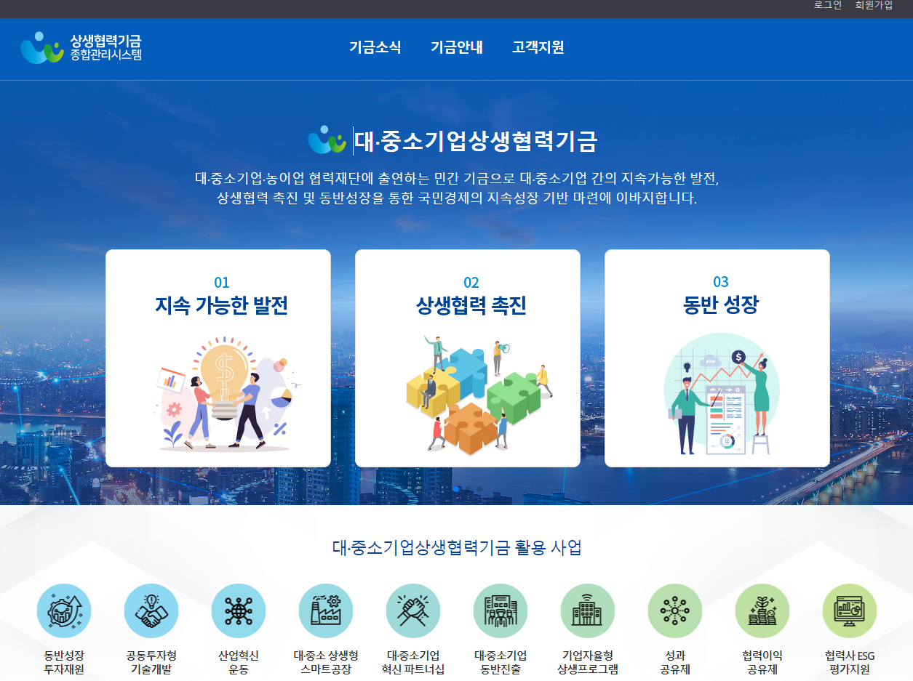
주요기술 : Java / JSP /Jstl / JavaScript/ JQuery / GitLab / Oracle / MySQl/ React / MyBatis
👉 고객사 담당자에게 질의 / 소스분석 / 예전 문서들로 학습하여 업무 수행
👉 고객사 담당자들과 소통 과 빠른 업무 처리로 문제해결
👉 고객사와 협의로 유지보수 업무 와 재개발 변행 진행
담당자, 사용자들과 직접적으로 소통을 하여 오류를 처리하고 운영서버를 관리하여 로그분석과 프로세스 관리같은 개발 위주가 아닌 운영하는 서비스를 직접관리하는 지금까지 안해본 새로운 업무를 진행하여 좋은 경험을 할 수 있었습니다.
HUG 주택토지보증공사
도시재생종합정보 유지개선과 국토부 신사업 개발
2023.01~2023.09 (9 Month)
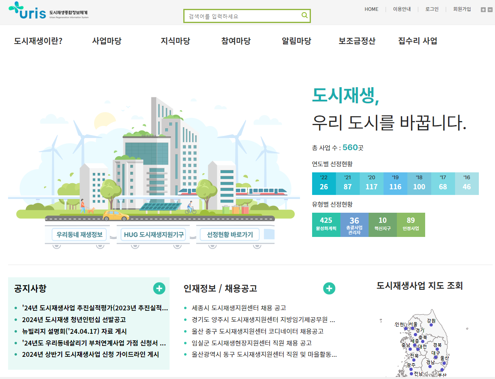
주요기술 : Java / JSP / JavaScript/ JQuery / GitLab /PostgreSQL /MyBatisJavascript 및 JSP 를 이용한 사업 관리 카드 추가 화면 검증 로직 추가 개발 (기여도 70%)
현업 담당자들이 사용하는 메인 화면 개선 및 사업 검증 로직 추가 개발
현업 담당자를 위한 가이드 매뉴얼 작성 (기여도 100%)
PostgreSQL Migration 작업을 위한 TEST 팀 구성
JSP/JQuery/JavaScript 를 이용한 평가위원 화면 개발 (기여도 90%)
GIS 개발 및 유지보수를 위한 국토부 주관 교육 참여
Issue
실시간 장애 대응 업무 경험 미숙
👉 오류 재현과 현업 근무자와 소통으로 빠른 대응
데이터 산출물 작업이 이루어지지 않아 데이터 신뢰성이 떨어짐
👉 5 년간에 데이터를 재수집하여 대조 후 데이터에 반영
상주팀과 비상주팀으로 업무 분배 문제 발생
👉 연락 수단을 동원하여 상주팀과 적극적인 소통으로 문제 해결
review
실시간으로 오류처리를 처음으로 진행하였습니다. 빠른 대응을 위한 업무 숙지와 오래된 Legacy코드 분석의 중요성을 느껴 제공하는 서비스를 이해하고 정확히 소스 분석을 하기 위해 노력하게 됐습니다.
도시재생종합정보 유지개선과 국토부 신사업 개발
2023.01~2023.09 (9 Month)
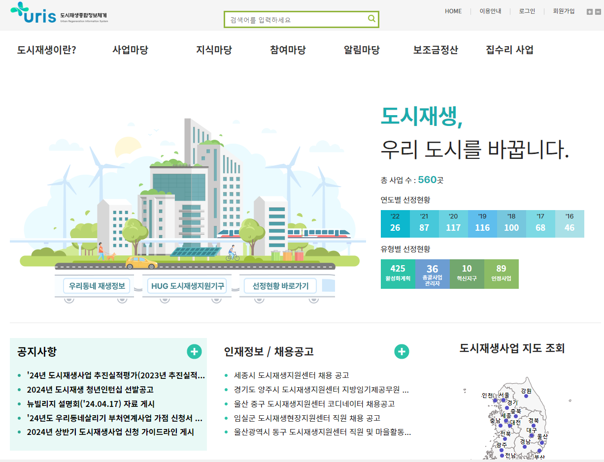
주요기술 : Java / JSP / JavaScript/ JQuery / GitLab /PostgreSQL /MyBatis
👉 오류 재현과 현업 근무자와 소통으로 빠른 대응
👉 5 년간에 데이터를 재수집하여 대조 후 데이터에 반영
👉 연락 수단을 동원하여 상주팀과 적극적인 소통으로 문제 해결
실시간으로 오류처리를 처음으로 진행하였습니다. 빠른 대응을 위한 업무 숙지와 오래된 Legacy코드 분석의 중요성을 느껴 제공하는 서비스를 이해하고 정확히 소스 분석을 하기 위해 노력하게 됐습니다.
신한은행
외환업무 담당자 전용 프로그램 개발
2022.10 ~ 2022.12 (2 Month)
주요기술 : Java / JavaScript/ JQuery 및 화면 개발 플랫폼 Websquare5 / clipReportWebsquare5를 이용한 검증 Script 추가 및 화면 테스트 ( 기여도 100% )
Websquare5를 이용한 수출입 신청서 검증 Script 추가 ( 기여도 70% )
클립 E-Form을 이용한 외국환 증명서 커스터마이징 ( 기여도 100% )
Issue
외환업무에 대한 지식 부족
👉 외환업무 담당자와 질의응답으로 외환 지식 습득
review
금융 프로젝트를 하면서 처음으로 외환 업무를 경험하게 됐습니다. 평소에 궁금해 하던 환전업무에 대해 알게 됐고 Websquare5로 개발을 진행하여 새로운 Ui개발 플랫폼을 경험하게 된 프로젝트입니다.
외환업무 담당자 전용 프로그램 개발
2022.10 ~ 2022.12 (2 Month)
주요기술 : Java / JavaScript/ JQuery 및 화면 개발 플랫폼 Websquare5 / clipReport
👉 외환업무 담당자와 질의응답으로 외환 지식 습득
금융 프로젝트를 하면서 처음으로 외환 업무를 경험하게 됐습니다. 평소에 궁금해 하던 환전업무에 대해 알게 됐고 Websquare5로 개발을 진행하여 새로운 Ui개발 플랫폼을 경험하게 된 프로젝트입니다.
SBI저축은행
비대면 채널 개선 프로젝트 인터넷뱅킹 개발
2022.01 ~ 2022.09 (9 Month)
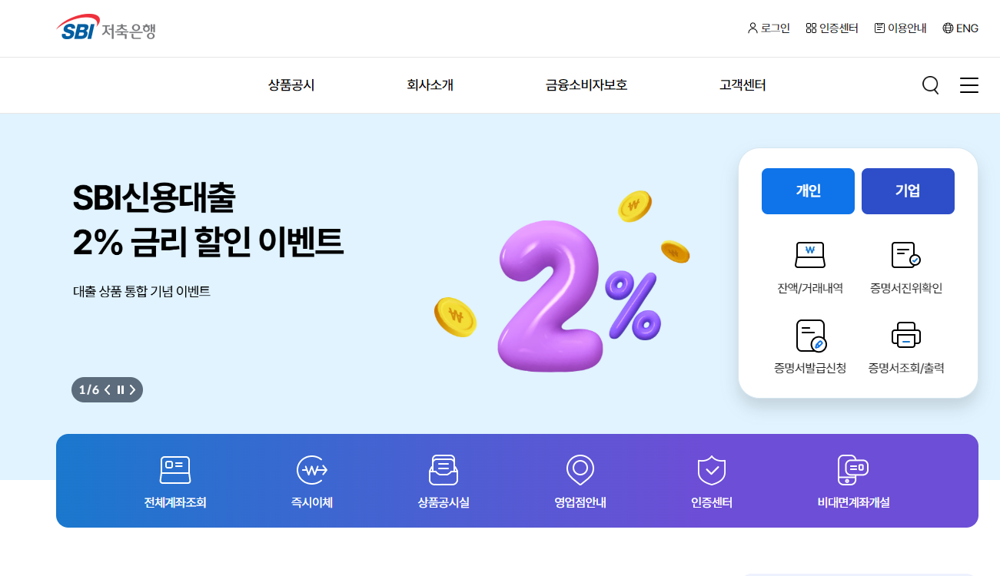 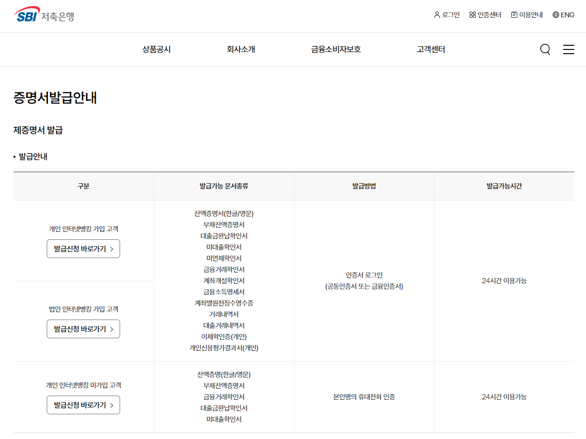
주요기술 : Java / JavaScript/ JQuery/ 클립리포트 / JeusJSP 를 이용한 사용자 검증 및 증명서 발급 메뉴 개발 ( 기여도 90% )
클립 리포트 솔루션 과 JS를 활용한 증명서 커스터마이징 및 검증 기능 및 출력 기능 구현 ( 기여도 80% )
팀 내 Util을 활용한 문서 보안 솔루션(MarkAny) 활용
은행 코어뱅킹 근무자와 커뮤니케이션을 통하여 API 송신 작업
Java를 이용한 코어뱅킹 데이터 가공 작업
Issue
팀원의 계약 종료로 인한 프로젝트 이탈 및 인수인계 미인수
👉 프로젝트 PL 의 도움을 받아 로직 설계부터 계정계(코어뱅킹) 협업까지 개발 완료
review
처음으로 Web개발에 투입하였습니다.
금융권 개발을 처음부터 마지막까지 참여하여 코어뱅킹과 채널계로 이루어진 시스템 개발구조를 알게 됐고 보안프로그램을 구조들을 알게 됐습니다. 여러 시니어들에게 배우고 앞으로 성장 방향을 정할수 있게 된 뜻 깊은 프로젝트입니다.
비대면 채널 개선 프로젝트 인터넷뱅킹 개발
2022.01 ~ 2022.09 (9 Month)
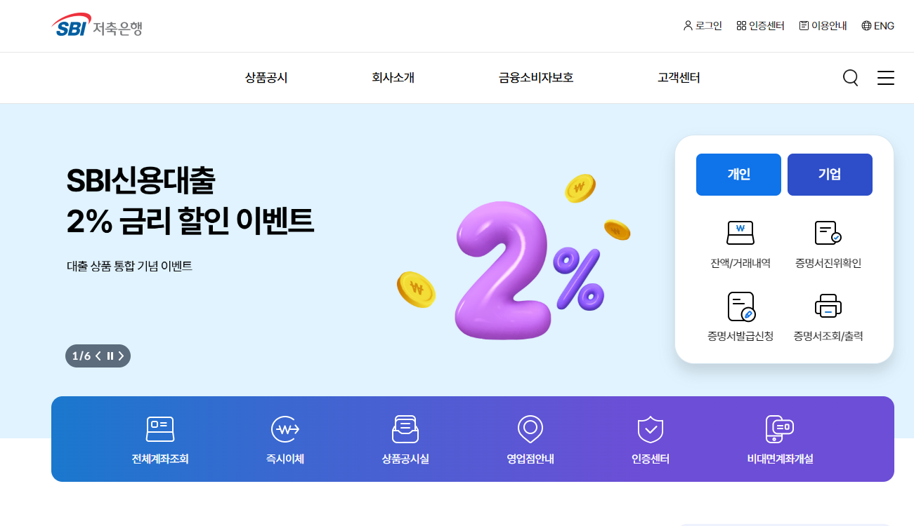 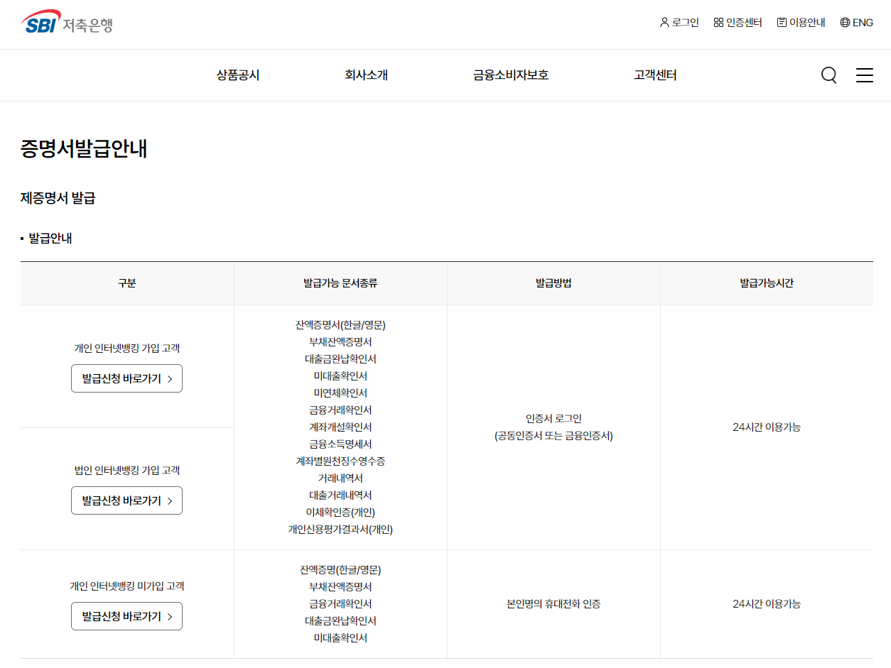
주요기술 : Java / JavaScript/ JQuery/ 클립리포트 / Jeus
👉 프로젝트 PL 의 도움을 받아 로직 설계부터 계정계(코어뱅킹) 협업까지 개발 완료
처음으로 Web개발에 투입하였습니다.
금융권 개발을 처음부터 마지막까지 참여하여 코어뱅킹과 채널계로 이루어진 시스템 개발구조를 알게 됐고 보안프로그램을 구조들을 알게 됐습니다. 여러 시니어들에게 배우고 앞으로 성장 방향을 정할수 있게 된 뜻 깊은 프로젝트입니다.
서민금융진흥원
회계업무 담당자 전용 프로그램 개발
2021.07 ~ 2021.11 (5 Month)
주요기술 : Java / Spring Framework / 화면 개발 솔루션 x-Frame
x-Frame 과 JS를 활용한 영업일 체크 및 회계 일 마감 Process검증 Script 추가 (기여도 80% )
x-Frame 및 JavaScript 를 이용한 정산 내역 조회 화면 개발 ( 기여도 70% )
시니어 개발자와 커뮤니케이션을 통한 쿼리API 활용
회계 업무를 위한 정산 배치 개발
Spring Batch를 이용한 배치 개발 ( 기여도 40% )
현업 개발자와 커뮤니케이션을 통한 쿼리 작성
Issue
DB 설계 오류로 개발 지연
👉 DB 설계를 위한 회의 진행중 Batch 프로그램 개발 업무 진행
회계 업무에 대한 지식 부족
👉 회계 시니어 개발자와 커뮤니케이션을 통해 쿼리 작성 및 회계 지식 습득
review
차세대 프로젝트를 경험한 의미있는 프로젝트입니다. 투입 전부터 이슈가 많았지만 Spring과 실시간 배치, 쿼리에 대한 개념, 팀원간 의사소통과 문제해결 등 당시에 부족한 저는 많은것을 배울수 있었습니다.
회계업무 담당자 전용 프로그램 개발
2021.07 ~ 2021.11 (5 Month)
주요기술 : Java / Spring Framework / 화면 개발 솔루션 x-Frame
👉 DB 설계를 위한 회의 진행중 Batch 프로그램 개발 업무 진행
👉 회계 시니어 개발자와 커뮤니케이션을 통해 쿼리 작성 및 회계 지식 습득
차세대 프로젝트를 경험한 의미있는 프로젝트입니다. 투입 전부터 이슈가 많았지만 Spring과 실시간 배치, 쿼리에 대한 개념, 팀원간 의사소통과 문제해결 등 당시에 부족한 저는 많은것을 배울수 있었습니다.
크로센트
클라우드 솔루션 Paas / Iaas 플랫폼 개발
2021.03 ~ 2021.06 (4 Month)
주요기술 : Java / AngularJS / JPA / Linux Ubuntu / GIT / Putty /mariaDB
AngularJs를 활용한 Storage 추가 화면 개선 및 로그인 검증 Script 개발 (기여도 40%)
로그인 검증 Script 개발 (기여도 40%)
리눅스를 활용한 Crontab 설정
Crontab을 활용한 스토리지 스켈레톤 환경정보 복사기능 구현 (기여도 40%)
Issue
AngularJs,클라우드 개발 환경 대한 지식 부족
👉공식문서와 교육으로 지식 습득 후 개발 활용
review
클라우드에 대해 배운 프로젝트입니다. 기존에 배운 기술들이 아닌 새로운 기술들로 이용하였고 리눅스을 사용하여 개발자로 첫 프로젝트였지만 성장할수 있었습니다.
클라우드 솔루션 Paas / Iaas 플랫폼 개발
2021.03 ~ 2021.06 (4 Month)
주요기술 : Java / AngularJS / JPA / Linux Ubuntu / GIT / Putty /mariaDB
👉공식문서와 교육으로 지식 습득 후 개발 활용
클라우드에 대해 배운 프로젝트입니다. 기존에 배운 기술들이 아닌 새로운 기술들로 이용하였고 리눅스을 사용하여 개발자로 첫 프로젝트였지만 성장할수 있었습니다.